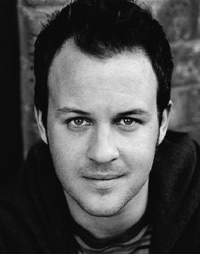

Danny Jackie
Manchester born Daniel is best known for his 2011 National Theatre performance in Danny Boyle's FRANKENSTEIN and more recently in Sam Mendes National Theatre production of King Lear. Daniel has played many a role on the screen including parts in EASTENDERS, TWO PINTS OF LARGER AND A PACKET OF CRISPS, DOCTORS and, most recently, comedy drama series TRYING AGAIN.
MarkStanley
British actor Mark graduated from the Guildhall School of Music and Drama in 2010 with a string of theatrical credits to his name. GAME OF THRONES marked his first television appearance where he played the role of Grenn for four series.
In 2014 Mark was lucky enough to land a role in Mike Leigh's MR TURNER followed by a harrowing performance of real life character 'Tug' in Paul Katis's KAJAKI. Mark is currently finishing up a part in STAR WARS VII - THE FORCE AWAKENS.

Peter James
A Northumbrian native, Peter grew up just a stones throw from our setting so knows our characters better than most.
Peter trained at Northumbria University before attending Central School of Speech and Drama where he developed his understanding and passion for acting. Along with his acting Peter is writing and developing his own scripts for film and theatre.
Jenna Boyd
After training at Guildford School of Acting Jenna went on to star in many of London's top West End musicals including I CAN'T SING, MY FARE LADY and LES MISÉRABLES with also a part in Tom Hoopers 2012 film version of the same name.
Jenna has also had TV roles in CASUALTY, HEARTBEAT, DUSTBIN BABY, BLUE MURDER and NIGHT AND DAY.
Her 14 year career has also taken her to the international stage performing in New York, Moscow and France.

Rina Yang
Rina is an award winning director of photography based in London.
She grew up in a small city in Japan, where she studied still life and portrait painting.
Her style of camera and lighting varies depending on each individual project’s needs and the director/s’ vision. Whether a new or long lasting relationship, close collaboration with the director and crew is key for her to produce a successful project.
David Coupland
David specialized as a producer at the Bournemouth Screen Academy through 2004-2007 and produced four short films including his award winning commercial “Marketing For Women – Dove's Real Beauty’”, which won 3 awards at the Kodak National Student Commercial awards 2007 including ‘Best in Brief’.
Since graduating David has spent his time working his way up the production ladder and learning from the biggest names in the business. Over the past 8 years he has worked on movies such as Star Wars Episode VII, Skyfall, Hugo and TV shows such as HBO’s Game of Thrones and currently Netflix’s Marco Polo.

Hallions Duo
Hailing from different sides of the UKs 54th northern parallel. Mark and Angus met and lived together while studying at Bournemouth Film School. After graduation Angus established himself as one of London’s up and coming editors while Mark moved up through the ranks of AD’s working on Hollywood feature films to commercials. While this was going on they worked on a multitude of projects from documentaries in Africa to east London hipster fashion shoots. Directing under the Hallions banner they are being sought after for they comedy cinematic approach to brand content films.
The Frenulum Pendulum is their 7th short film they have made together, with a TV show in the development and a feature film in works.